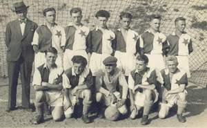

|
NOVODOBÁ HISTORIE
Podklady pro zaznamenání činnosti
v letech 1950-1957 nejsou žádné. Pouze podle paměti kronikáře
poznamenává, že v roce 1954 vystoupilo I.mužstvo na protest ze
soutěže, protože z důvodů nějaké reorganizace nepostoupilo i když
postoupit měli. Po odstoupení všech hráčů se hrála jen přátelská
utkání. První mužstvo representoval dorost. Postupně se však všichni
hráči vrátili a znova se oddíl přihlásil do soutěže. V roce 1956
mužstvo vyhrálo svou třídu a postoupilo do I.A třídy. Mužstvo v I.A
třídě vydrželo do roku 1961, kdy odstupovali starší hráči. Tento rok
sestoupili z posledního místa do okresního přeboru. Také došlo ke
druhé změně názvu klubu – ze Sokola se stala Jiskra, která se
v okresním přeboru trápila celých pět sezón. Až na jaře roku 1967 se
opět neštěmickým fotbalistům podařilo prorazit do I.A třídy.
V té době odešli někteří starší
hráči a mužstvo bylo doplněno mladými hráči.
V roce 1968 na počest 50. výročí
založení klubu si výbor oddílu i hráči dali za cíl vrátit se znova do
I.A třídy. Tato snaha byla korunována a od podzimu roku 1968 mužstvo
znova startovalo v I.A třídě. V tomto roce se také konal jubilejní
ples, který se konal 13. ledna. V březnu tohoto roku byla svolána
slavnostní členská chůze oddílu v sále místního kina. Na schůzi byli
odměněni za svou činnost jak současní aktivní hráči a funkcionáři, tak
i mnoho bývalých hráčů, funkcionářů včetně nejstarších členů. Na
schůzi bylo také rozhodnuto vrátit se znovu k názvu Český Lev
Neštěmice.
 V přípravě
na podzimní část 1. ligy je v Ústí nad Labem na soustředění ligové
mužstvo pražské Slávie. Vedení oddílu ČL se podařilo zajistit sehrání
přátelského utkání na hřišti ČL Neštěmice s jejich kompletním
mužstvem. Naposledy hrála pražská Slávie v Neštěmicích v roce 1926
s výsledkem 2:3. Dne 6.8. 1974 po 48 letech došlo tedy k opětnému
utkání s výsledkem 1:5 (0:2). Na obrázcích jsou mužstva Slávie
v letech 1926 a 1974.

Vrchol přišel v sezóně
1977/1978, kdy fotbalisté Neštěmic skončili v I.A třídě na prvním
místě a poprvé v historii klubu se probojovali do krajského přeboru.
V severočeském krajském přeboru se Neštěmice držely čtyři sezóny, ale
na jaře v roce 1982 přišel výkonnostní pád z této elitní soutěže do
I.A třídy. Tři roky se Český Lev usilovně snažil o návrat mezi
severočeskou elitu, což se mu podařilo v sezóně 1984/1985, kdy se stal
suveréním vítězem krajské soutěže ( bývalá I.A třída)
Kádr mužstva: trenér:
Jaroslav Zabloudil st.
brankáři:
Bláha, Temeschinko
hráči: Šašek, Štorc, Dočkal, Havlíček, Jirkovský, J.
Ptáček, Beránek, Pištora, Taussig, Kostečka, Jakl, Jančar, Louda, P.
Strnad, Z. Trubák, Janda, C. Trubák, Šafrata, Makal, Horváth, Smolař
ml., Zabloudil ml.
Mistrovská sezóna 1986/1987 byla
významná ještě jedním důvodem a to je otevřením centrálního travnatého
hřiště. Bylo to 27. dubna 1986. U této příležitosti se zde uskutečnil
bohatý program, který sledoval přes 2000 diváků. Po žákovském
předzápase nastoupila proti sobě mužstva Neštěmice A a fotbaloví
internacionálové ČSSR. Internacionálové ČSSR nakonec zvítězili 3:5.
Branky: J. Šašek, Jakl, Zd. Trubák
– Panenka 2, Knebort 2, Nehoda
Sestava XI. Čs. Internacionálů:
Kouba – M. Dvořák – Stratil, Štambacher, Jelínek – J. Jurkanin (
75.Vojta), Panenka, D. Herda – Fr. Veselý, Knebort, Nehoda - Vojta
Sestava domácích:
Temeschinko (Bláha) – Zd. Trubák, Havlíček, Taussig, C. Trubák,
Šafrata(Slavík) – Horváth(J. Šašek), Ptáček, Čekan, Jakl ( Kostečka),
Janda
V současné době má fotbalový oddíl
Českého Lva Tonaso Neštěmice 250 členů, osm žákovských družstev, dva
dorostenecké celky a jeden tým dospělých. Předsedou oddílu je Václav
Beránek, manažerem a vedoucí A mužstva je Miloš Hon.
V neštěmickém klubu vyrostla řada
výborných fotbalistů. Někteří to dotáhli do první ligy i do
reprezentace. Patří mezi M. Vdovjak ( Sparta Praha), Vl. Počta (
Teplice), Koudela (hrál ligu fotbalovou i ve stolním tenisu), Karda,
Hoftych, Maliga. V současné době je následují mládežníci Kostečka,
Ledvinka, Zoubele, Jakub, Martínek, Král, Stárek, Rytíř, Ečer a další.
Mužstvo
dospělých ČLT Neštěmice patří již řadu let k předním účastníkům
divizní soutěže
|